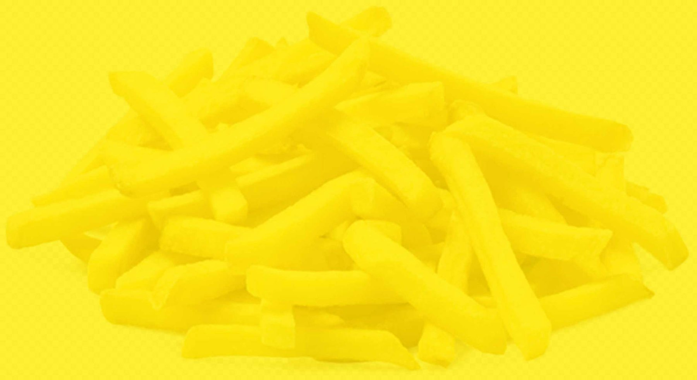
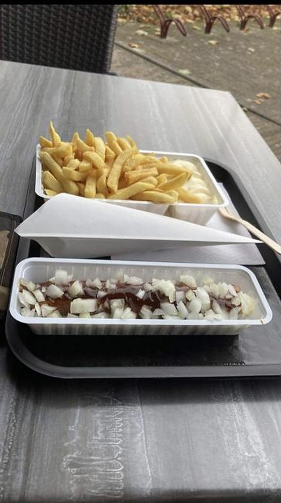
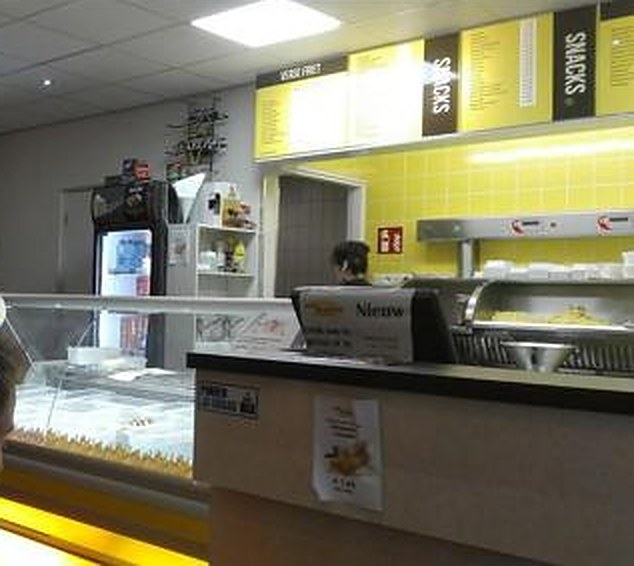

Al jaren een begrip in Luyksgestel
Verse friet die we zelf voorbakken, snacks en gerechten aan de Rijt. En het hele jaar door softijs en milkshakes. Bel uw bestelling door en haal hem op.
uit 136 beoordelingen
Wat u bij ons haalt
Afhalen of even zitten op het terras aan de Rijt.
Verse friet
Onze friet bakken we zelf voor. Zo proeft u het verschil.
Snacks en burgers
Van frikandel en kroket tot burgers en Vietnamese loempia.
Bal uit de jus
Een ouderwetse gehaktbal uit de jus. Altijd een favoriet.
Alleen in het weekendSoftijs en milkshakes
Niet alleen in de zomer: bij ons het hele jaar verkrijgbaar.

Zelf verse friet voorbakken
Bij Die Twee krijgt u verse friet. We bakken hem zelf voor, en dat merken onze klanten. Daarnaast hebben we snacks en gerechten voor de hele familie.
- Hamburger
- Bami schijf
- Frikandel
- Kroket
- Kaaskroket
- Kaassoufflé
- Mini loempia's
- Verse friet
Wat klanten zeggen
"Lekker eten verse frietjes super vers en Lekker."Marion Putman · Google
"Heel lekker verse friet, zeer mooie cafetaria"Jung · eet.nu
"Lekker gesnacked."Jacob Spoelman · Google
Tot snel bij Die Twee
U vindt ons aan de Rijt, midden in Luyksgestel.
Cafetaria Die Twee
Bestellen, of iets regelen voor catering? Bel ons gerust.
- Maandag
- 16:00 – 20:00
- Dinsdag
- Gesloten
- Woensdag en donderdag
- 12:00 – 20:00
- Vrijdag t/m zondag
- 12:00 – 21:00
Tijdens carnaval, kermis en feestdagen kunnen de tijden afwijken.